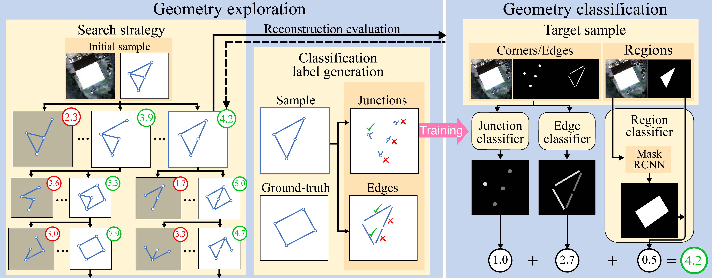
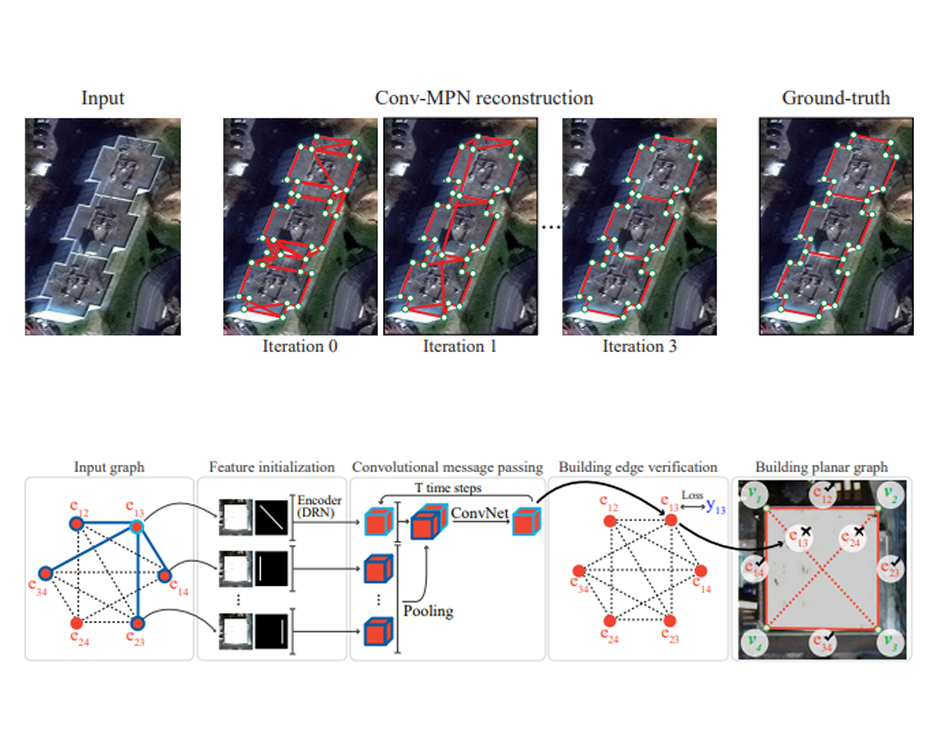

Bio
I am a first-year Phd student in the Computing Science at Simon Fraser University,
under supervision of Prof. Yasutaka Furukawa.
I received my bachelor degree from Beihang University. My research interests include geometry reasoning and scene understanding in Computer Vision.
News
September 2021
Received SFU Graduate Fellowship & Special Graduate Entrance Scholarship
September 2021
Continue studying at SFU as a PhD student
July 2021
One paper got accepted at ICCV 2021
January 2021
Received Helmut and Hugo Eppich Family Graduate Scholarship
March 2020
One paper got accepted at CVPR 2020
January 2020
Received SFU Graduate Fellowship
January 2020
Joining Simon Fraser University as a master student (thesis based)
Projects

Structured Outdoor Architecture Reconstruction by Exploration and Classification
ICCV 2021 Poster

Conv-MPN: Convolutional Message Passing Neural Network for Structured Outdoor Architecture Reconstruction
CVPR 2020 Poster